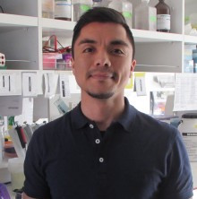
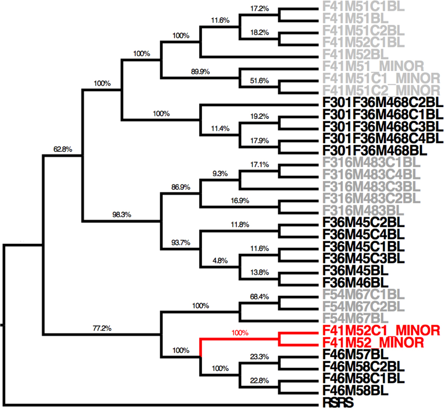
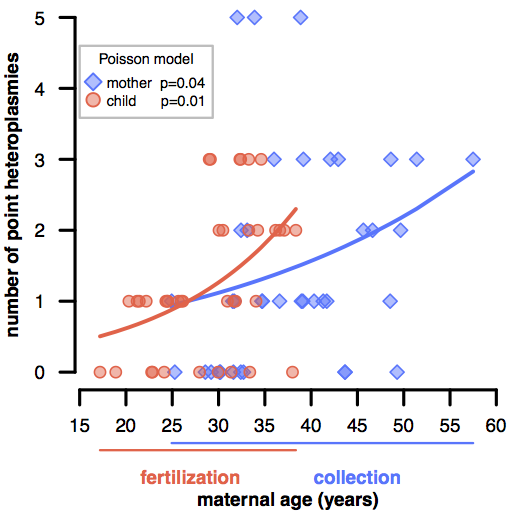
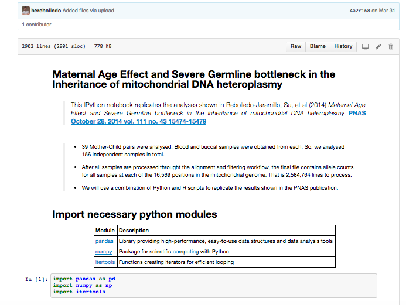

|  |
Boris E. Rebolledo-Jaramillo Ph.D. in Bioinformatics and Genomics Office: Av. Las Condes 12438 Lo Barnechea, RM, Chile E-mail: brebolledo@udd.cl |
|
|
EDUCATION
| 2016 | Ph.D. in Integrative Biosciences, Bioinformatics and Genomics option Pennsylvania State Unversity, USA. |
||||
| 2010 | M.Sc. Biochemistry and Bioinformatics University of Concepcion, Chile. |
||||
| 2008 | B.Sc. Bioengineering, minor in Cell and Molecular Biology University of Concepcion, Chile. |
|
 Beware of sample cross-contamination in re-sequencing studies |
 Children of older women carry more mtDNA heteroplasmies |
 Reproducible research with Jupyter notebooks and Galaxy |
PEER REVIEWED PUBLICATIONS
Hasbun R, Iturra C, Bravo S, Rebolledo-Jaramillo B, Valledor L. (2016). Differential Methylation of Genomic Regions Associated with Heteroblasty Detected by M&M Algorithm in the Nonmodel Species Eucalyptus globulus Labill. Int. J. Genomics, vol. 2016, 4395153.
Rebolledo-Jaramillo B*, Su MS*, McElhoe J, Stoller N, Dickins B, Korneliussen T, Nielsen R, Holland M, Paul I, Nekrutenko A, Makova KD. (2014) Maternal Age Effect and Severe Germline Bottleneck in the Inheritance of Human Mitochondrial DNA. [*Equal contribution] PNAS 111(43):15474
Rebolledo-Jaramillo B, Alarcon RA, Fernandez VI, Gutierrez SE. (2014). Cis-regulatory elements are harbored in Intron5 of the RUNX1 gene. BMC Genomics 15:225
Dickins B*, Rebolledo-Jaramillo B*, Shu-Wei S, Paul IM, Blankenberg D, Stoler N, Makova KD, Nekrutenko A. (2014). Controlling for contamination in resequencing studies with a reproducible web-based phylogenetic approach. [*Equal contribution] BioTechniques, 56(3):134
Zheng R, Rebolledo-Jaramillo B, Zong Y, Wang L, Russo P, Hancock W, Stanger B, Hardison R, Blobel G (2013). Function of GATA factors in the adult mouse liver. PLoS One. 2013 Dec 18;8(12):e83723
Bar-Yaacov D, Avital G, Levin L, Richards A, Hachen N, Rebolledo-Jaramillo B, Nekrutenko A, Zarivach R, Mishmar D. (2013). RNA-DNA differences in human mitochondria restore ancestral form of 16S ribosomal RNA. Genome Res. 23(11):1789-96
BOOK CHAPTERS
SELECTED CONFERENCES
Talks
Posters
AWARDS
| 2010 | Huck Institutes of the Life Sciences Fellowship Pennsylvania State Unversity, USA. |
| 2010 | Fulbright for doctoral studies Department of State, USA. |
| 2010 | Becas-Chile scholarship for doctoral studies abroad CONICYT, Chile. |
| 2004 | Enrique Molina Garmendia Scholarship University of Concepcion, Chile. |